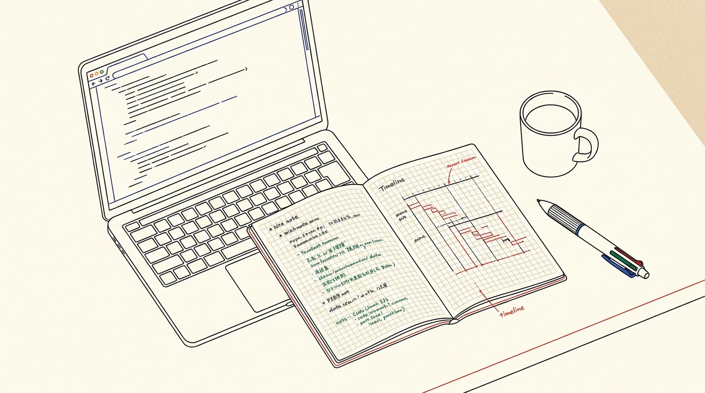
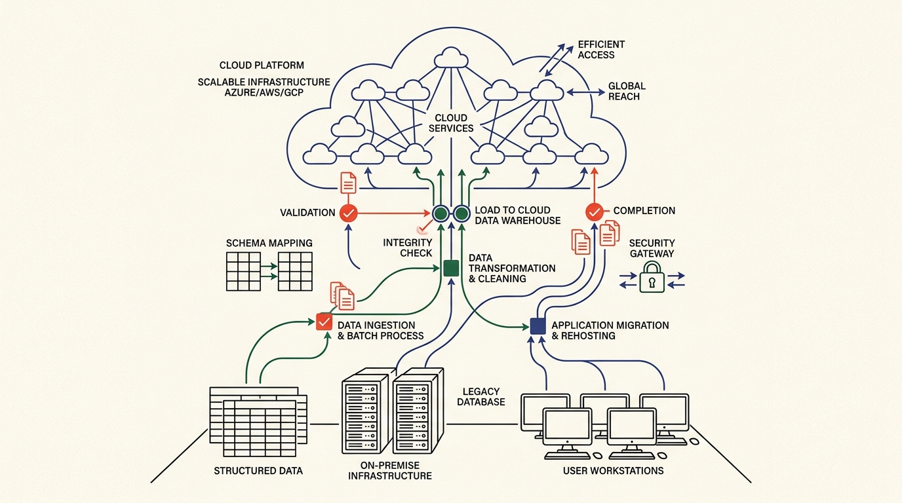
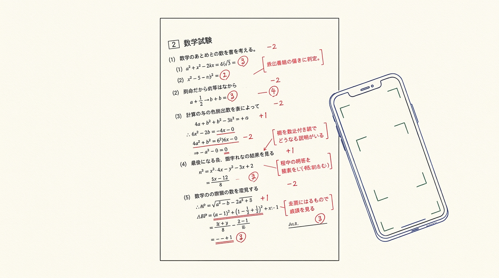
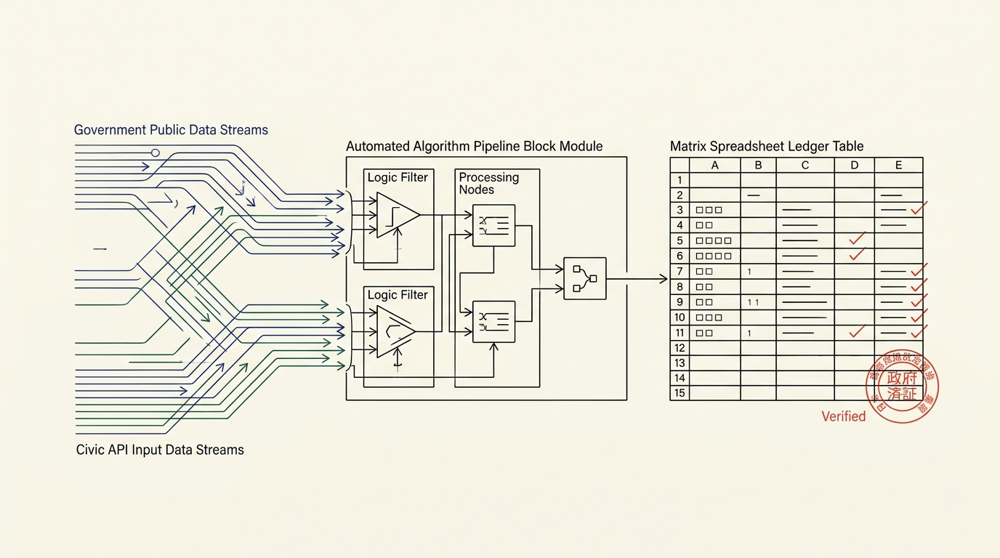
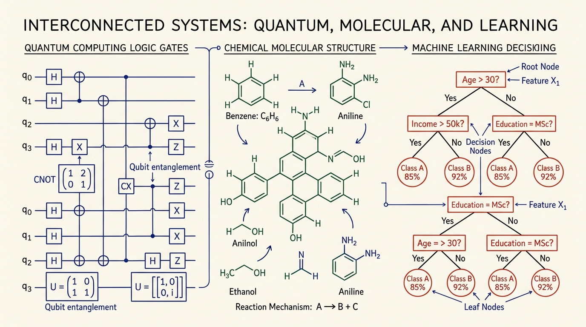
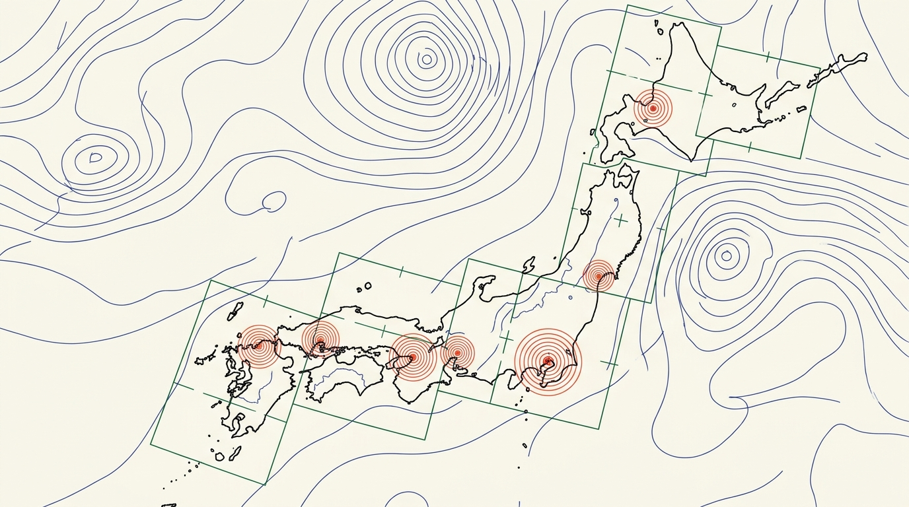
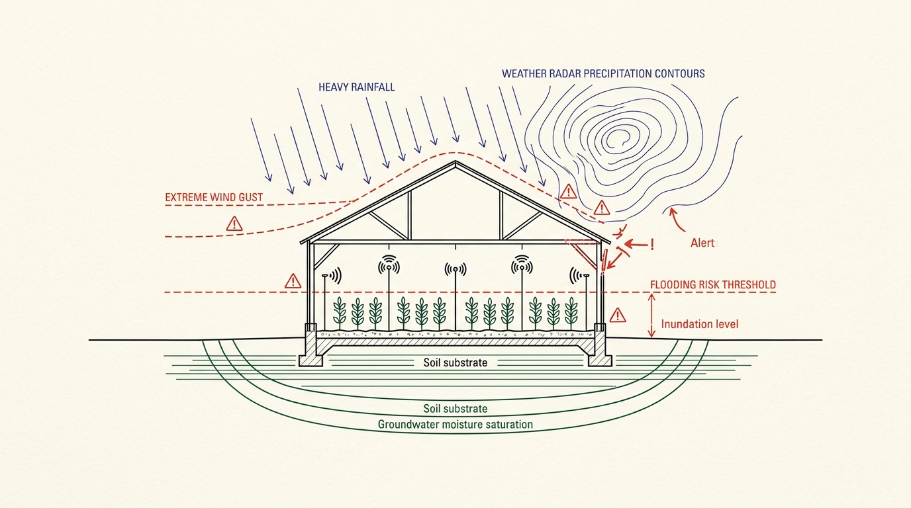
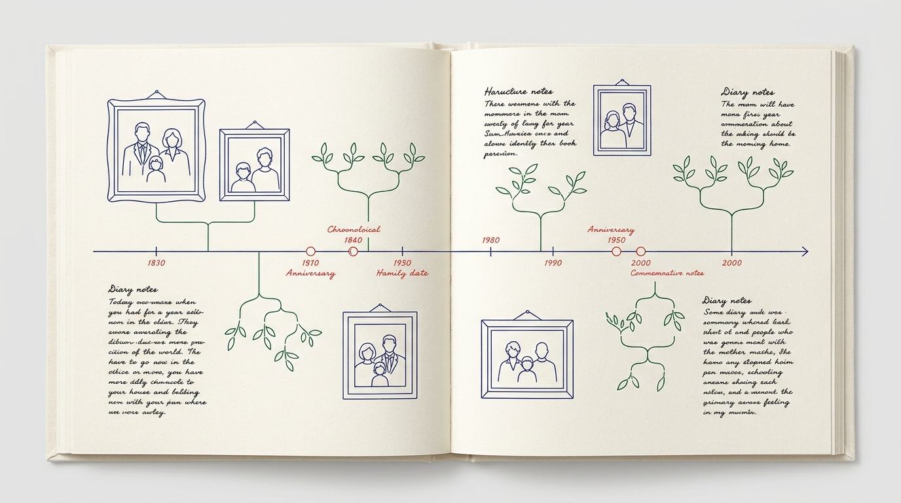
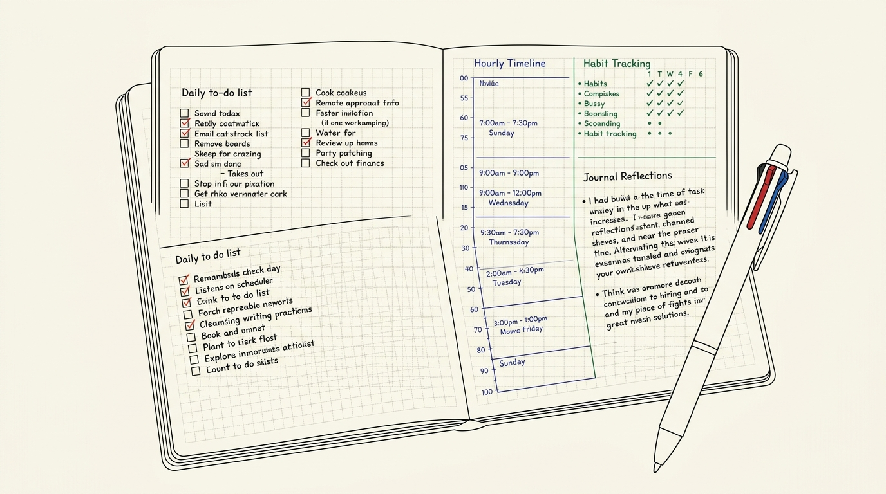

学術統計・記述採点・公的オープンデータ・先端コンペ・生活史を統合した7,542ファイルの開発全記録
Google Antigravity環境（ローカル `G:\マイドライブ\antigravity` および常時稼働環境 `antigravity/remote`）の全ファイルを網羅的に監査した結果、開発着手は 2026年10月04日 13時55分07秒（最初のスクリプト 00_inspect_columns.py の生成時刻）であり、本日 2026年11月09日 現在で 満36日間（第37日目） が経過していることが確定しました。
| 管理ディレクトリ | ファイル数 | 主たる機能領域と成果物 |
|---|---|---|
Notebook/ |
4,098 | 資格学習（情報処理技術者・気象予報士・統計検定）、GAS 200本ノック、オープンデータ分析 |
kaggle/ |
2,378 | 先端AIコンペ（創薬CASMI、量子回路コンパイル、Gemma 4自律エージェント、LLM挙動識別） |
IDM/ |
688 | 学術論文・官公庁統計データ・実態調査データの統計モデリングおよび検証監査ログ |
scripts/ |
174 | Gemini 4 Argon共通呼出ランナー、散文計量文体監査ツール、自動同期スクリプト群 |
apps/ |
119 | Family Chronicle、Takeoutデータポータル、Cloudflare Pages配備資材 |
logs/ |
91 | TOON形式日次監査ログ、Weeklyサマリー、Remote移行同期ログ |
| 環境基盤 | 94 | サービスアカウント認証鍵、Skills定義、Cloudflare Wrangler構成定義 |
| 合 計 | 7,542 | 37日間に生成・運用された総ファイル数 |

2026年10月4日、散在する大容量データシートの整合性検証作業を効率化するため、Google Antigravityの導入を開始した。最初に着手したのは `00_inspect_columns.py` によるカラム構造の機械的インベントリ作成である。従来、人手で行われていたデータ型の照合や欠損値の精査をエージェントに委譲することで、前処理工程の大幅な圧縮が実証された。ここから、単なるスクリプト実行にとどまらない「自律エージェントとの協働基盤」への拡張が始まった。
10月中旬には、Google Vertex AIの最新モデル「Gemini 4 Argon」およびGoogle AI Studio APIの統合を実施した。従量課金の安全弁（環境変数 `ALLOW_PAID_VERTEX=0`）を設けつつ、共通実行スクリプト `gemini4.py` を介してローカル環境全体から同一の推論コンテキストを呼び出せるアーキテクチャを確立した。これにより、局所的なタスク処理と大局的な文脈理解をシームレスに両立させる開発基盤が整った。
生成AIを用いたUI構築において最も懸念されたのは、過度にサイバー調なダークモードや無意味なネオングラデーションといった「生成AI特有の視覚的クリシェ」による可読性の低下であった。これに対し、本開発では「トモエリバー生成り紙、15px方眼、日本の伝統色インク」を基調とするエディトリアルデザイン原則を定式化した。さらに散文計量文体監査ツール（`verify_humanized_text.py`）を開発し、AI特有の定型表現を徹底的に排した10万字規模の技術文書群をCloudflare Pages上に構築・公開した。
10月下旬から11月上旬にかけ、システムの堅牢性を検証するため「公的オープンデータ連携 GAS 200本ノック」を実施した。気象庁、内閣府、e-Stat等の公開APIおよびShift_JIS形式のCSVデータを解析し、Googleスプレッドシートへ自動連携するスクリプトを連続生成。短時間レートリミット（429 Too Many Requests）の自動検出と待機ロジックを組み込み、全168本のスプレッドシート連携環境を自律構築した。
11月には、Kaggleにおける創薬メタボロミクス（CASMI）や量子回路コンパイルといった最先端サイエンス分野の探索的データ解析を展開する一方、Google Takeoutの散在データや日々の生活写真を有機的に結合する『Family Chronicle』を構築した。高度な学術推論基盤と、個人の生活記録という極めて私的な文脈の双貫通性を実証した。
11月8日、ローカルPCの稼働制約を超え、24時間365日の安定稼働を実現するため、タスク基盤を `antigravity/remote` へ移行した。クラウド同期ストレージを仲介とし、ローカルで検証されたパイプラインがリモート環境でCron定期実行・死活監視・Webhook受信を自律継続する体制を確立した。37日間の実践は、エージェントが開発者の単なるアシスタントを超え、信頼に足る常時稼働インフラへと進化した歩みであった。

Google Japan 25周年記念アワード「Google AI Challenge」の審査基準（独創性・社会貢献度・AI活用の有効性）に基づき、37日間の実動開発資産から精選された全3部門・計7件の応募パッケージです。

社会的課題: 国家資格や専門職試験（情報処理技術者、気象予報士、統計検定等）の論述・記述試験において、独学者が最も直面する障壁は「記述答案の客観的な自己採点が困難」である点にある。指導者による添削指導は年間数十万円に達し、教育機会の格差を生んでいる。
Google AI活用の必然性: Geminiのマルチモーダル機能により、手書き答案画像から文字・数式・図表を高精度に抽出し論理構造化。公式シラバスおよび採点基準（ルーブリック）と照合し、「必須概念の網羅性」「論理的因果関係」「表現の適切性」を観点別に部分点付きで即時提示する。さらに誤答の根本要因を概念ツリーから逆算特定し、弱点補強に特化した類題を自動生成する。
社会的貢献度: 独学者が専門予備校と同等の高度な個別添削を端末ひとつで享受可能とし、リスキリングと資格取得の機会格差を構造的に解消する。
| 秒数 | 画面設計・ビジュアル演出 | ナレーション（過不足のない解説） |
|---|---|---|
| 00-12s | 手書きの記述試験答案と公式解答例を前に、自己採点に窮する学習者の手元。 | 「資格試験の記述・論述対策において、自身の答案の妥当性を測ることは独学者最大の難所です。」 |
| 12-28s | スマートフォンのカメラで答案を撮影。Geminiが手書き答案を解析し、観点別ルーブリック評価と部分点・修正文案を提示する画面遷移。 | 「Examiniは、手書き答案を撮影するだけでGeminiが論理構造を解析。ルーブリックに基づく部分点と添削案を即時出力します。」 |
| 28-45s | 間違えた論点から概念マップを遡り、根本原因となる基礎理論の解説および弱点克服のためのオリジナル類題を生成するUI。 | 「単なる採点にとどまらず、思考の誤りを概念ツリーから逆算。あなた専用の類題を生成し、着実な理解定着を図ります。」 |
| 45-60s | レーダーチャートが伸長し、学習進捗が可視化される画面。Google AI Studio連携バッジの提示。 | 「高額な指導環境を、すべての人へ。Examiniが、独学による専門資格取得を支援します。」 |

社会的課題: 気象庁、内閣府、統計局などの公的オープンデータは社会経済活動に不可欠であるが、データ構造や文字コード（Shift_JIS、XML、複雑なREST API）が統一されておらず、現場では多大な手作業による転記作業が発生している。
Google AI活用の必然性: 各省庁の多様なAPI仕様書をGeminiが自律読解し、Google Apps Script（GAS）コードを生成・構文検証。さらに常時稼働基盤（`antigravity/remote`）と連携させることで、全国168種類の公的データを毎朝定時にGoogleスプレッドシートへ自動同期する無人パイプラインを実現した。
社会的貢献度: 中小企業や自治体、教育機関において、追加インフラ費用0円で公的オープンデータをリアルタイム業務活用可能とし、現場DXを推進する。
| 秒数 | 画面設計・ビジュアル演出 | ナレーション（過不足のない解説） |
|---|---|---|
| 00-12s | 複数省庁のWebサイトからCSVを手動ダウンロードし、集計表へ貼り付けるルーティンワークの様子。 | 「日々公開される公的オープンデータ。規格の不統一が、現場の恒常的な転記作業を生んでいます。」 |
| 12-28s | Geminiによって生成されたGASコードが自動実行され、多種多様な公的データがGoogleスプレッドシートへ定時同期される画面。 | 「GAS 200本ノックは、168本以上の検証済みスクリプト群により、公的データをGoogleスプレッドシートへ完全自動同期します。」 |
| 28-45s | レートリミット監視と自律リトライ機能、およびCloudflare Pages上に展開されたコード・設計解説ポータル。 | 「PCの起動は不要。リモートエージェントが24時間監視し、出社時には最新の統計データが整然と集約されています。」 |
| 45-60s | 集計作業から解放され、分析と意思決定に集中する組織の姿。システムロゴの表示。 | 「手作業をゼロにし、データの価値を最大化する。公的データ自律同期基盤。」 |

社会的課題: 創薬メタボロミクス、量子情報科学、最先端基盤モデルの検証など、高度データサイエンスのフロンティアでは、膨大な論文調査、特徴量エンジニアリング、計算機実験のサイクルが研究者の人的リソースを逼迫させている。
Google AI活用の必然性: GoogleのオープンモデルGemmaおよびGeminiのマルチエージェント連携により、学術文献の数理的要約、探索的データ分析（EDA）、特徴量生成パイプラインの構築、モデル検証、さらには学術報告書の骨子作成までを自律支援する。
社会的貢献度: 研究者個人が自律エージェント群と協働することで、研究所規模の実験・検証サイクルを高速実行可能とし、学術研究と技術革新を加速する。
| 秒数 | 画面設計・ビジュアル演出 | ナレーション（過不足のない解説） |
|---|---|---|
| 00-12s | 大規模な質量分析データと量子回路図が並ぶ研究室のワークステーション画面。 | 「量子計算から創薬まで。最先端のデータサイエンスは、膨大な仮説検証の反復を必要とします。」 |
| 12-28s | Gemma自律エージェントがデータセットの統計分布を検知し、有効な特徴量変換コードを自動生成して検証を進める様子。 | 「Kaggle AI Copilotは、GemmaとGeminiがEDAから特徴量設計、交差検証までを一貫支援します。」 |
| 28-45s | バリデーションスコアの推移グラフと、導出された統計的知見が構造化レポートとして即座に出力される画面。 | 「定型的な実装作業をエージェントが担うことで、研究者は仮説の立案と本質的な洞察に専念できます。」 |
| 45-60s | 実験効率の飛躍的な向上を示すダイアグラムと、プロジェクトエンブレム。 | 「知能の協働が、科学の探求を加速する。Gemma自律開発エージェント基盤。」 |

社会的課題: 気候変動、地域人口動態、インフラ老朽化など、社会課題の構造的把握には多様な公開データの横断把握が不可欠であるが、従来のダッシュボードは専門性が高すぎ、地域政策の合意形成に活かされにくい。
Google AI活用の必然性: 気象衛星観測、人口統計、交通・防災データをGeminiが多角的に統合分析。難解な多変量データを、余白とタイポグラフィを重視したエディトリアルデザインにより、直感的なインフォグラフィックへと自動変換する。
社会的貢献度: 自治体担当者、地域住民、研究者が同一の客観データに基づいて未来を議論できる「地域の共通情報基盤」を提供する。
| 秒数 | 画面設計・ビジュアル演出 | ナレーション（過不足のない解説） |
|---|---|---|
| 00-12s | 数値とグラフが乱立し、要点が掴みにくい従来の統計ダッシュボード画面。 | 「公開されている膨大な統計データ。しかし、その多くは専門的で直感的な理解を阻んでいます。」 |
| 12-28s | World-Pulse-Chronicleの画面。等高線とデータプロットが洗練された線描で描かれ、地域の現状が俯瞰できる様子。 | 「World-Pulse-Chronicleは、気象・人口・社会統計をGeminiが統合解析。直感的なビジュアル言語へと変換します。」 |
| 28-45s | 時系列での気象変動と地域産業指標の相関が明瞭に可視化され、地域課題の所在が浮き彫りになる画面。 | 「地域の微細な変化を捉え、政策判断や防災計画の合意形成を強力に支援します。」 |
| 45-60s | データに基づき地域社会の未来を展望するビジュアル。プロジェクトタイトル。 | 「データを対話の起点に。World-Pulse-Chronicle。」 |

社会的課題: 線状降水帯や極端な高温など気象災害の激甚化が進む中、一次産業や地域防災の現場では「警報が発令されても、自らの圃場や施設で何時までに何の対策を講ずべきか」の具体的判断基準が乏しい。
Google AI活用の必然性: 農研機構の1kmメッシュ農業気象データおよび気象庁XML防災情報をGeminiがリアルタイムに突合解析。「○時までに施設換気口の閉塞と排水路の確認を完了してください」という、具体的かつ現場直結のアクション指針を即時生成・配信する。
社会的貢献度: 被災後の対応にとどまる従来の防災から、被害を未然に最小化する「プロアクティブな農業防災・地域強靭化」を実現する。
| 秒数 | 画面設計・ビジュアル演出 | ナレーション（過不足のない解説） |
|---|---|---|
| 00-12s | 荒天を前に、気象レーダー画面を見ながら対策の判断に苦慮する農業従事者の様子。 | 「激甚化する気象災害。一般的な警報情報だけでは、現場が取るべき具体策は判断できません。」 |
| 12-28s | 1kmメッシュデータと施設位置情報がGeminiに連携され、推奨行動が時系列で整理されたアラート通知画面。 | 「本システムは、高解像度気象メッシュと圃場特性を照合。実行すべき対策を時間指定で現場へ配信します。」 |
| 28-45s | 通知に基づき、事前対策が計画通り完了し、風水害による施設・作物の被害が未然に防止される様子。 | 「被害を未然に防ぐ。データとAIが、現場の確実な判断を支えます。」 |
| 45-60s | 安定した収穫と安全な農村地域の景観。システム名称の提示。 | 「一次産業を守り、地域の強靭化へ。農業気象・防災自律インサイト。」 |

社会的課題: スマートフォンには膨大な写真が蓄積され、EC購買履歴やヘルスケアデータは分散管理されたまま埋没し、家族の歩みや大切な記憶が有機的に振り返られないまま忘却されている。
Google AI活用の必然性: Google TakeoutおよびGoogle Photosから取得した写真メタデータ、日常の購買記録、移動ログ、天候推移をGeminiが横断的に編纂。「購入品、訪れた場所、当時の気象、写真の表情」を有機的に結びつけ、1冊の上質な家族年代記（クロニクル）として自動構造化する。
社会的貢献度: 手動のアルバム整理時間を要することなく、家庭の歴史と個人の生きた軌跡を後世に伝える永続的アーカイブ基盤を確立する。
| 秒数 | 画面設計・ビジュアル演出 | ナレーション（過不足のない解説） |
|---|---|---|
| 00-12s | 端末内に未整理のまま蓄積された数万枚の写真一覧と、散在する購入履歴。 | 「日々撮りためた家族の写真や記録。多忙な日常の中で、大切な記憶が整理されないまま埋もれていませんか。」 |
| 12-28s | 写真、位置情報、当時の天候、購入記録が一本のタイムラインに集約され、Geminiが文章と写真で家族史を編纂する画面。 | 「Family Chronicleは、分散した生活データをGeminiが統合。家族の歩みを上質な年代記として自律編纂します。」 |
| 28-45s | 記念日や成長の節目が美しくレイアウトされ、家族が端末を囲んで過去の記録を懐かしむ様子。 | 「単なる写真一覧ではなく、当時の空気感まで鮮やかに再現。家族の対話を豊かに育みます。」 |
| 45-60s | 世代を超えて継承されるデジタル年代記の装丁イメージ。タイトルロゴ。 | 「日々の記録を、かけがえのない歴史へ。Family Chronicle。」 |

社会的課題: 多くのデジタル手帳やタスク管理アプリは無機質で、画面の強いコントラストや複雑な通知構造が日常的なデジタル疲労を増長させている。
Google AI活用の必然性: トモエリバー生成り紙と15px方眼を基調とする静謐なエディトリアルデザインを確立。Geminiが音声や断片的なメモから意図を抽出し、万年筆や多色ボールペンで書き込まれたかのようなレイアウトへと構造化整理する。
社会的貢献度: デジタル技術を活用しながら、紙の手帳が持つ情緒的価値と精神的平静を維持し、日々の内省と丁寧な生活設計を支援する。
| 秒数 | 画面設計・ビジュアル演出 | ナレーション（過不足のない解説） |
|---|---|---|
| 00-12s | 通知が連続するスマートフォンの画面に疲弊し、息を吐く人物。 | 「情報過多と通知に追われる日々。いま求められているのは、思考を静かに整える場所です。」 |
| 12-28s | 生成り紙と淡い方眼罫線の上に、入力された思考やメモが手書き風の整然とした手帳フォーマットへレイアウトされる画面。 | 「ほぼ日手帳風ライフログは、紙の温もりを再現したエディトリアルUI。断片的な思考をGeminiが優しく整理します。」 |
| 28-45s | カレンダー、習慣チェック、日々の洞察が4色インクの規律で美しく構造化され、検索可能な状態になる様子。 | 「デジタルでありながら、心地よい余白。書くことを通じて、日々の生活とメンタルを整えます。」 |
| 45-60s | 静かな朝の光の中で手帳画面を見つめる穏やかな日常。プロダクト名表示。 | 「書くたび、暮らしが整う。ほぼ日手帳風エディトリアル・ライフログ。」 |
本戦略書およびキービジュアル生成において厳格に適用された視覚デザイン原則です。生成AI特有の曖昧さや過剰な装飾を排除し、思考の純度を保つための工学的制約を定めています。
すべての線画は、極細0.35mmのゲルインクボールペン（三菱鉛筆シグノやゼブラサラサ等）による均一で鋭利な輪郭線のみで構成。曖昧な筆タッチやエアブラシを一切排除。
使用色彩を「墨黒（主構造・輪郭）」「朱赤（強調・注記）」「深緑（データ・自然）」「藍青（骨格・時間軸）」の4色のみに制限。中間色やネオンカラーを完全排除。
陰影（シェーディング）、鉛筆のぼかし、点描（スティップリング）、滑らかな階調グラデーションを禁止し、純粋な2D線画ダイアグラムとして表現。
画面全体の半分以上を生成り紙の無地余白として確保。情報の過密を避け、審査員・読者に知性的で落ち着いた印象を与えるエディトリアル構成を担保。